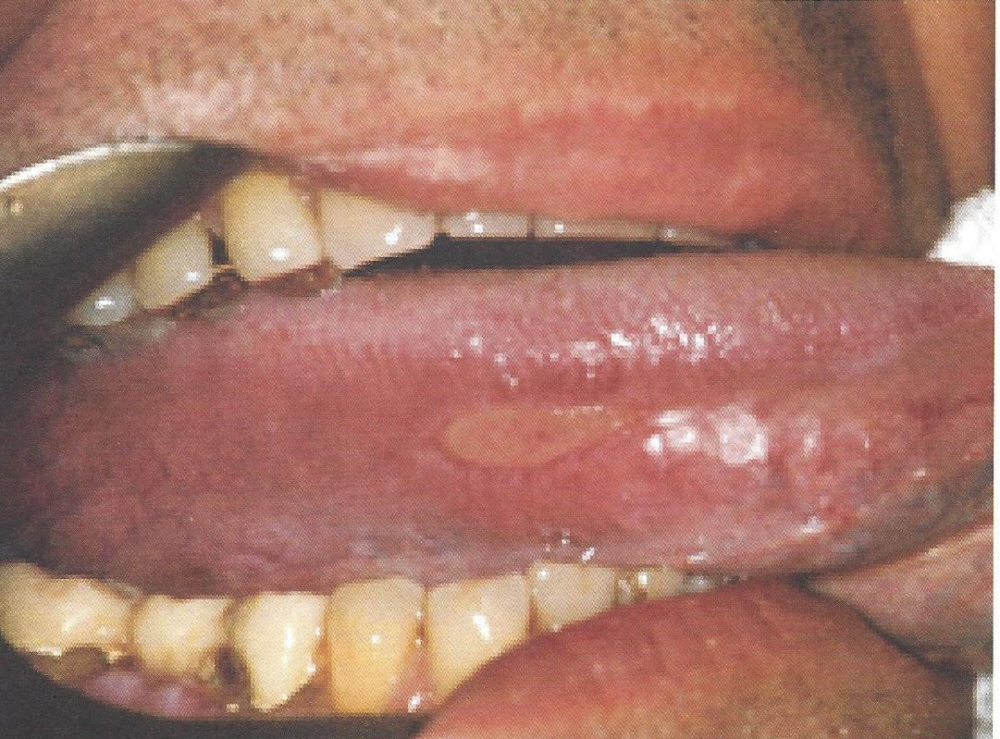

แผลจากการกัด การกระแทก การระคายเคือง

มีประวัติกัดกระแทก รับประทานของร้อนหรือการใช้สารเคมีความเข้มข้นสูง มักพบเป็นแผลกลมหรือรี ขอบยกนูนและแดง การรักษา เมื่อตรวจหาและกำจัดสาเหตุได้แล้ว แผลจะหายเองภายใน 2-3 สัปดาห์